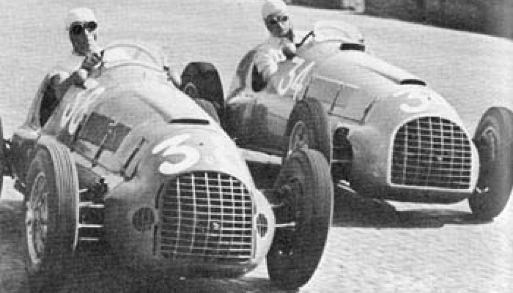
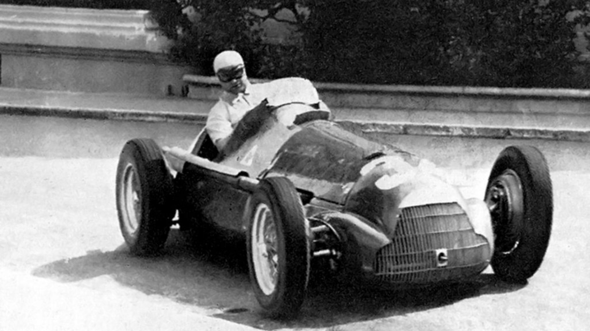
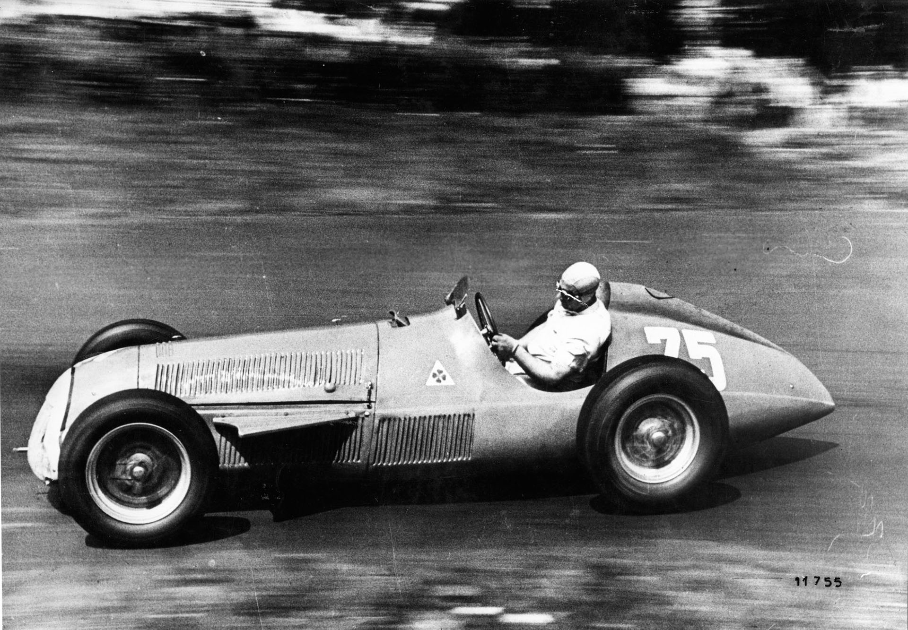
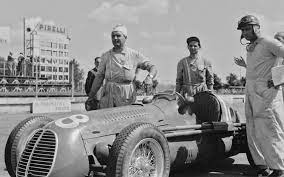
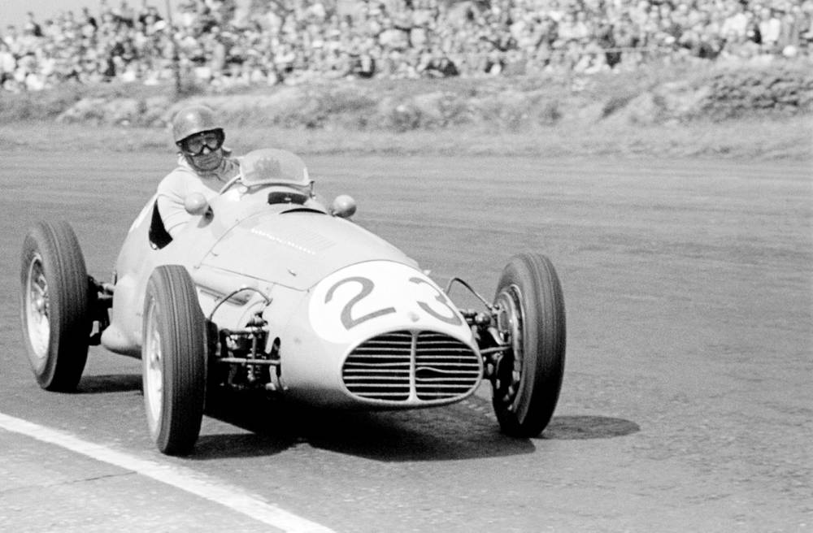
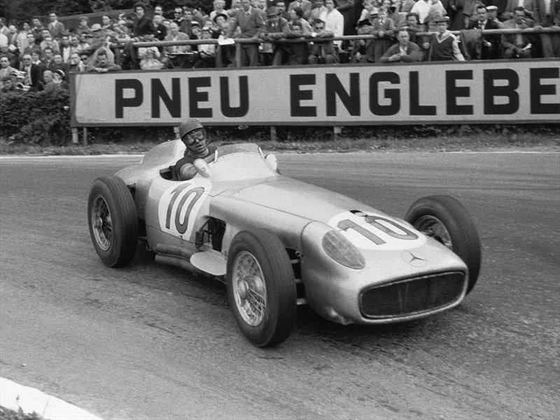
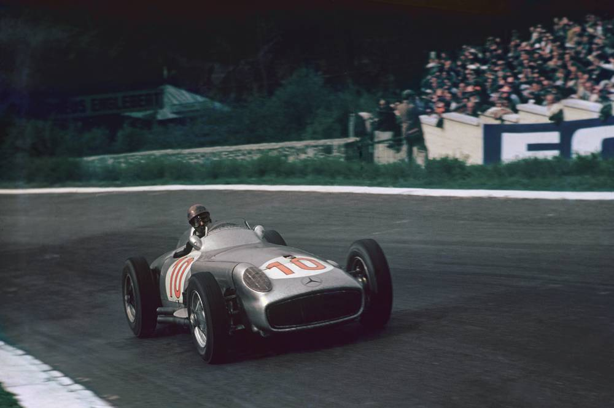
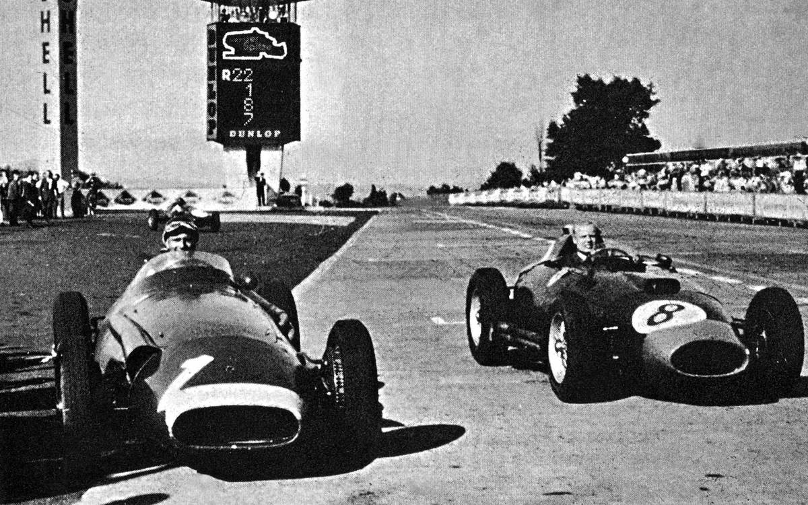
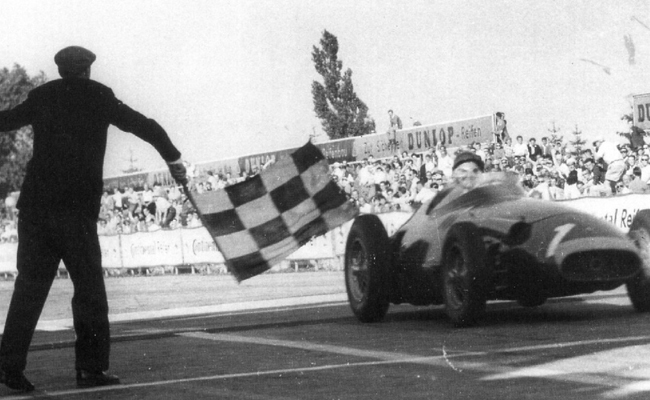
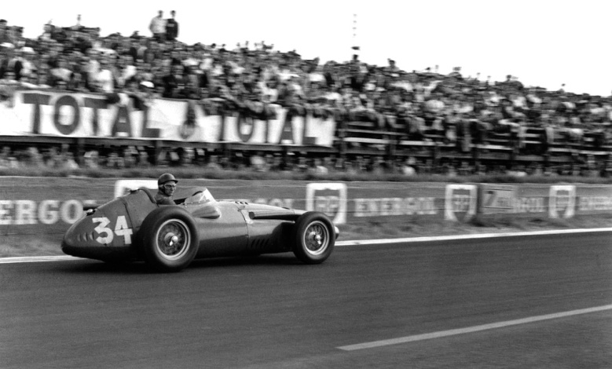

1947 a 1949 - La previa a la gran gesta
Entre los años 1947 y
1949
Juan
Manuel compitió en varios grandes premios con
monoplazas que luego darían lugar a la creación del Campeonato Mundial de Fórmula 1, cosechando algunos
triunfos y grandes actuaciones. Empezaba así su gesta...


1950 - Subcampeón (Alfa Romeo)
En el año 1950 compitió en el
primer
Campeonato Mundial de Fórmula 1, corriendo
alternadamente en dos equipos, Alfa Romeo y Maserati. Acabó dicho mundial en segundo lugar, por detrás de
Giuseppe Farina. En aquella magnífica temporada triunfó en 6 grandes premios: Mónaco, Angulema, Bélgica,
Reims, Des Nations y y Pescara.
1951 - Campeón (Alfa Romeo)
Su primer campeonato mundial lo
obtuvo
en el
año 1951, disputando 14 competencias
con el equipo oficial Alfa Romeo. Juan Manuel obtuvo victorias en los grandes premios de Montecarlo,
Bélgica, Francia, Suiza, Europa y España. Sus máximos rivales durante aquella temporada fueron su
compatriota Froilán González y Alberto Ascari.


1952 - Accidente, parate y recuperación
En el año 1952 sufre un
accidente automovilístico que lo priva de competir durante 4
meses. Muchos consideraron que su carrera estaba terminada. No obstante ello, se recupera y participa de
diversas competencias en varias categorías, cosechando algunos valiosos triunfos.
1953 - Subcampeón (Maserati)
Durante 1953 corrió en Fórmula 1
para
dos
equipos: Alfa Romero y Maserati. Obtuvo el
primer puesto en Monza con Maserati y terminó dicho mundial en segundo puesto, demostrando que su carrera
estaba más que vigente y auguraba grandes logros.


1954 - Campeón (Maserati y Mercedes-Benz)
1954 fue un año
fantástico.
Corrió 2 carreras con Maserati, dado que el Mercedes
W196 no había sido terminado. Esas 2 carreras con Maserati fueron triunfos notables: el Gran Premio de la
República Argentina y el Gran Premio de Bélgica. A mediados de año concretó su contrato con el equipo
Mercedes-Benz, sumando aún más triunfos. Participó en total durante 1954 en ocho carreras puntuables, de las
cuales ganó 6, obteniendo 57 de los 72 puntos en juego y, de suyo, saliendo campeón, sacándole 30 puntos de
ventaja a su perseguidor. Por su gran desempeño, fue distinguido como deportista del año en su país natal,
logrando así el Premio Olimpia de Oro.
1955 - Campeón (Mercedes-Benz)
Durante 1955 la Fórmula 1 había
previsto
correr 11 Grandes Premios, pero debido a un
accidente serio en Le Mans, el campeonato se acortó a sólo 6 GP’s, siendo uno de los más breves de la
historia de la Máxima. Fangio ganó 4 de ellos con su Mercedes W196, del cual opinó: “...desde la primera
prueba de 1954 con el Mercedes-Benz, tuve el sentimiento de estar sobre un auto perfecto, de esos del tipo
que los pilotos soñamos correr algún día.” Lógicamente, sumó otro campeonato a su vitrina, siendo este el
tercero de su cuenta personal.


1956 - Campeón (Ferrari)
En 1956 Mercedes se retiró de la F1,
por lo
cual Juan Manuel firmó contrato nada
menos que con Ferrari. El monoplaza Lancia-Ferrari era inconsistente y su rendimiento distaba de ser el
mejor, sin embargo nuestro piloto se las arregló para cosechar 6 victorias y 2 grandes puestos, forjando una
gran relación con su compañero de equipo, Peter Collins, pero no así con los directores de la Scuderia
Ferrari. Sobreponiéndose tanto a la inconsistencia de su monoplaza como a la tensa relación con los jefes
del equipo, el as del volante obtuvo su cuarto título mundial a bordo del Lancia-Ferrari en 1956,
demostrando toda su valía y capacidad con un auto que no estaba a la altura.
1957 - Campeón (Maserati)
Para el año 1957 abandona Ferrari y se
une
al
equipo Maserati. Su desempeño dicho
año fue de antología, ganando en Nurburgring una carrera que quedará siempre en la memoria de los fanáticos
del automovilismo, ya que batió en la última vuelta a Ferrari, su anterior equipo, logrando así su quinto y
último título mundial. Pese a dicha obtención, Maserati se retiró aquel año de la Máxima.


1958 - Se retira la leyenda
En el año 1958 nuestro homenajeado
se
retira
oficialmente de la Fórmula 1
conduciendo, como un su debut, un Maserati. Pone así punto final a una carrera automovilística fantástica: 5
campeonatos mundiales en la Máxima, con distintos equipos, en una era donde la seguridad era casi
inexistente y cada piloto arriesgaba su vida y su integridad física en cada competencia.